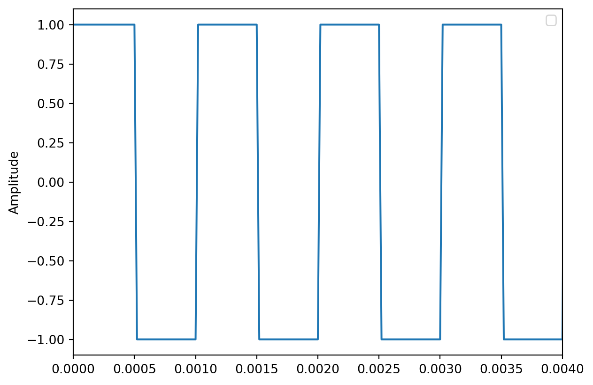
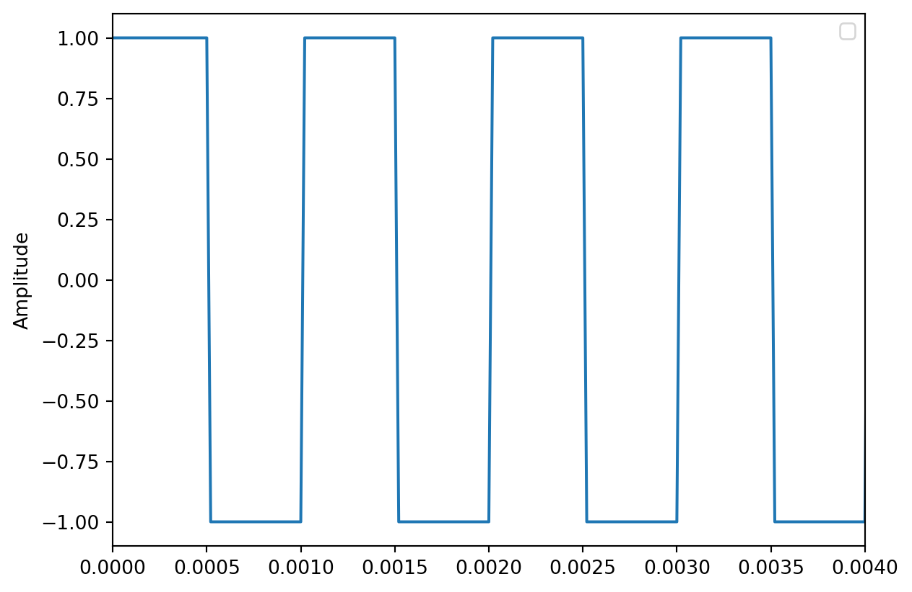
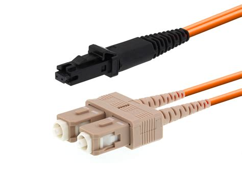
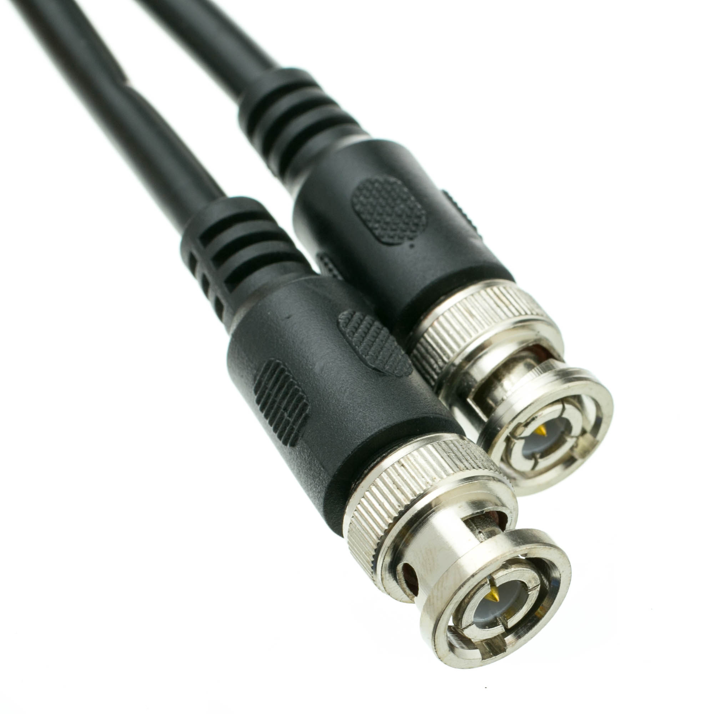

<Figure size 672x480 with 0 Axes>Exemples de signal numérique (Non Return to Zero)

Après être passé au travers d’un convertisseur, l’audio est représenté par un ensemble d’échantillons. En raison de cette représentation particulière, on trouve un certain nombre de protocoles de communication de signaux numériques entre appareils. Il ne s’agit plus ici de faire transiter une tension analogue à celle de la variation de pression d’une onde sonore, mais plutôt une tension représentant des mots binaires (bits).
La variation de tension de ces signaux s’apparente à une onde carrée. Ces signaux périodiques possèdent un état « haut » et un état « bas », très pratique pour communiquer des nombres binaires.
<Figure size 672x480 with 0 Axes>Exemples de signal numérique (Non Return to Zero)

Les protocoles ci-dessous permettent de transmettre un ou plusieurs signaux numériques entre deux appareils.
L’AES3 est un protocole défini par l’Audio Engineering Society et par l’European Union Broadcast. Il est principalement destiné aux appareils audio dits « professionnels ». Il permet de véhiculer deux canaux audio, à une fréquence d’échantillonnage maximal de 48 kHz, via une fiche XLR ou BNC (coaxial).
La S/PDIF est relativement proche de l’AES3, plutôt utilisé dans les équipements grand public, utilisant des câbles coaxiaux (sur fiches RCA) ou optiques (fiche toslink).
L’ADAT lightpipe, souvent abrégé ADAT, est un autre protocole de transmission de signaux numériques. Il a été développé par Alesis pour fonctionner avec les magnétophones à bandes numériques de la même marque. ADAT signifie enfaîte « Alesis Digital Audio Tape ». On retrouve ce protocole sur un grand nombre d’appareils, notamment les interfaces audio, afin d’augmenter le nombre d’entrées/sorties accessibles.
L’ADAT peut transporter jusqu’à huit canaux à 44.1/48 kHz, quatre canaux à 88.2/96 kHz et deux canaux à 176.4/192 kHz. Le débit d’information est donc constant, doubler la fréquence d’échantillonnage divise par deux le nombre de canaux.
La connectique la plus courante pour l’ADAT est la fibre optique avec fiches toslink.

Le MADI, ou AES10, est un protocole permettant d’acheminer un grand nombre de canaux. On peut donc récupérer soixante-quatre canaux audio à une fréquence de 44.1/48 kHz. Comme pour l’ADAT, le nombre de canaux est divisé par deux à chaque doublement de la fréquence d’échantillonnage.
Ce protocole se retrouve fréquemment dans le monde de l’audio professionnel. Les connexions entre appareils supportant le MADI peuvent se faire soit avec des fibres optiques, soit sur câble coaxial (fiches BNC). Certains constructeurs, comme DIGICO, ont choisi les câbles RJ45 comme support d’acheminement.


Fibre optique et câble BNC
Aujourd’hui, dans le monde du spectacle vivant, la plupart des salles de spectacle sont équipées avec des solutions de transmission des signaux audio sur réseau. Ces solutions se retrouvent aussi de plus en plus dans les studios d’enregistrement et de production audiovisuelle.
Il existe plusieurs protocoles permettant le déploiement de tels dispositifs, mais leur logique fondamentale reste identique. Chaque appareil capable de se connecter au réseau audio peut recevoir et envoyer un flux audio a n’importe quels autres appareils appartenant au même réseau.
Les réseaux audio sont régis par les mêmes règles que les réseaux informatiques. Chaque appareil pouvant être connecté à un réseau est identifiable par une adresse matérielle unique, appelée adresse MAC. Lorsqu’un appareil est connecté sur un réseau, il faut lui attribuer une adresse logique appelée adresse IP. Il y a ici deux façons de faire. Soit l’utilisateur attribue manuellement une adresse différente à chaque machine (solution préférée en audio, mais fastidieuse lorsque le réseau comprend un grand nombre d’appareils), soit le réseau possède un serveur DHCP qui se chargera d’attribuer une adresse IP unique à chacun des appareils connectés. Cet outil est généralement intégré dans un appareil nommé routeur, permettant d’interconnecter plusieurs appareils ainsi que de gérer le routage des flux d’information. Une fois les appareils interconnectés, chaque constructeur de solutions audio sur IP fournit un logiciel de routage de l’audio entre les appareils.
Les principaux acteurs industriels des réseaux audionumériques sont Audinet avec DANTE, ALC NetworX (appartenant à Lawo) avec Ravenna, et les protocoles open source AES67 et AVB.